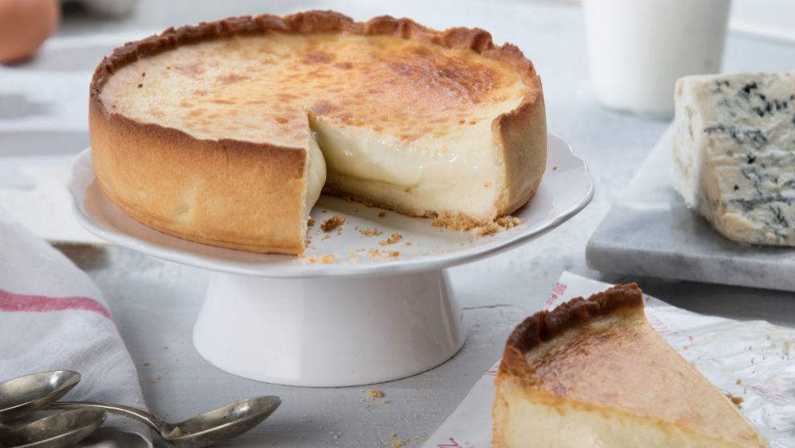

Cheese Tarque

"The latest wonder in Malaga gastronomy"
Ingredients
- Cookie María (200g)
- melted butter (100g)
- Cream cheese (600g)
- Cream (400g)
- Sugar (200g)
- 1 pinch of salt
- 6 Eggs
Preparation
- Crush the cookies and mix them with the melted butter. Cover the base of a removable mold with them, lifting the mixture slightly on the edge so that it holds better and the filling does not come out. Put in the freezer for half an hour.
- Mix the cream, cream cheese and sugar well with a pinch of salt. Add the free-range eggs and beat until they are integrated into the mixture.
- Pour the filling over the base and place in the oven preheated to 175° C. Bake for 35 minutes (be careful because not all ovens respond the same: if yours is not very exact, you may need to extend the cooking time by 5 to 10 minutes) . When you take it out of the oven it will have risen, but it will go down immediately.
- Let it cool for an hour and a half, and carefully unmold it, passing the edge of a blunt knife between the cake and the mold so that it separates well from the walls. Cut and serve: Clara recommends eating it the same day.
Nutritional information
------- Per portion (142 g) -------
- Energy
- 1660 kj
397 kcal
- Fat
- Saturated fat
14,415g
Monounsaturated Fat
6,427g
Polyunsaturated Fat
1,027g
- Carbohydrates
- 39,55g
- Sugar
- 19,74g
- Fiber
- 2,9g
- Protein
- 9,57g
- Salt
- 0,55g
- Cholesterol
- 74mg
- Potassium
- 225mg